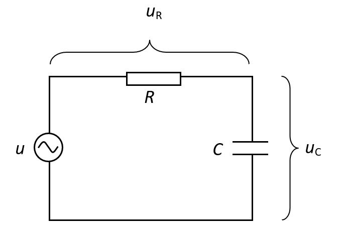
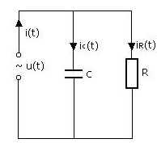

1. Izračunaj ukupni otpor ako je zadano R1= 4 Ohma, R2= 2 Ohma, R3= 3 Ohma i R4= 6 Ohma

2. Koliki je ukupni otpor spoja otpronika R1= 20 Ohma, R2= 80 Ohma, R3= 70 Ohma, R4= 80 Ohma i R5= 12 Ohma

3. Odredite ukupni otpor R u spoju gdje su spojeni R1= 3k Ohma, R2= 3k Ohma, R3= 4k Ohma i R4= 10k Ohma.

4. Otpornici R1= 4 Ohma, R2= 4 Ohma, R3= 6 Ohma, R4= 2 Ohma, R5= 2 Ohma i R6 = 4 čine mješoviti spoj koji je preključen na napon U= 220 V. Odredite struju izvora I te struje I1, I3, I5.

5. Na mrežu napona U= 120 V priključeni su otpornici R1= 40 Ohma, R2= 60 Ohma, R3= 16 Ohma i R4= 120 Ohma. Izračunajte struje I1, I2, I4

6. Mješoviti spoj pet otpornika otpora R1= 12k Ohma, R2= 10k Ohma, R3= 5k Ohma, R4= 35k Ohma, R5= 60k Ohma. Napon izvpora je U= 1800 V. Odredite struje I1, I2, I3 i I4 koje teku kroz otpornike

7. Mješoviti spoj trošila poznatih otpora R1= 14 Ohma, R2= 10 Ohma, R3= 6 Ohma, R4= 18 Ohma, R5= 4 Ohma i R7 = 12 priključeni su na napon izovra U= 90 V. Odredite vrijednost sturuja I1, I3, i I4.

8. Prema shemi spojeni su otpornici pounatih otpora R1= 6 Ohma, R2= 6 Ohma, R3= 6 Ohma, R4= 2 Ohma, R5= 6 Ohma i R7 = 4 Ohma. Struja izvpra I= 9 A. Odredite napon izvora U kao i struje I1, I2, I3 koje koje teku pripadnim granam mreže.
9. Otpornici R1= 1 Ohm, R2= 6 Ohma, R3= 4 Ohma, R4= 3 Ohma, R5= 3 Ohma, R6= 2 Ohma, R7= 4 Ohma spojeni su prema shemi Napon izvora je U= 54 V. Odredite struje koje teku granama strujnog kruga I1, I4, I5.

10. Kolike su snage trošila P2, P6 i P7 ako su otpori trošila R1= 2 Ohma, R2= 1 Ohm, R3= 4 Ohma, R4= 3 Ohma, R5= 5 Ohma R6= 6 Ohma i R7= 4 Ohma spojni su na napon izvora U= 120 V. Odredite Ukupnu snagu mreže P.

11. Električna mreža od tri otpornika poznatih otpora R1= 40 Ohma, R2= 20 Ohma, R3= 30 Ohma spojna je prema shemi na slici. Mreža je prilkučena na napon U. Nađite snagu trošila P1 i P3.

12. Sedam trošila priključeno je na napon izvora U= 180 V prema shemi na slici. Poznati su otpori trošila R1= 6 Ohma, R2= 6 Ohma, R3= 6 Ohma, R4= 2 Ohma, R5= 6 Ohma, R6= 8 Ohma, R7= 4 Ohma. Odredit e snagu na svakom od trošila P1, P2, P3, P4, P5, P6, P7 te snagu mreže P.
13. Izmjerena je struja serijskog spoja I= 5A. Snaga prvog trošila je P1 = 300 W, a otpor drugog trošila je R2 = 18 Ohma Odredite napon izvora U.

14. Razvijena snaga na prvom otporniku je P1= 86.64 W a otpor drugog trošila je R2 = 6 Ohma. Odredite struju izovra I, te struju I1 i snagu drugog trošila.

15. Šest otpornika pounatih otpora R1= 10 Ohma, R2= 40 Ohma, R3= 40 Ohma, R4= 20 Ohma, R5= 10 Ohma, R6=10 Ohma spojeno je prema slici. Mjerenje je pokazalo da kroz otpornik R3 teče struja I3 = 0.25 A. Odredite struje I2, I4, I6 i napon izovra U.

16. Koliki je otpor četvrtog trošila R4 kroz koji teče struja I4= 12 A ako su poznate snage P1=8.96 kW, P2 = 4,48 kW P3= 2.16 kW, P5= 2.16 Kw i P6= 9.2 kW. Napon izovra je U=920 V i struja izvora je I= 34 A

17. Prema shemi na slici poznati su otpori R1= 14 Ohma, R2= 2 Ohma, R4= 12 Ohma, R5= 4 Ohma i snaga trošila P3= 600 W. Ampermetar pokazuje sturju I2= 15 A. Nađite napon izovra U, I1, I3, I4

18. Mrežu sa sheme čine četiri otpornika, a poznato je da je napon mreže U= 385 V, vrijednost otpora R3= 4 Ohma razvijena snaga na otporniku R2 je P2= 7.35 kW, struja I1 = 87.5 A i I4 = 5 A

19. Dva otpornika spojena su paaralelno prema slici. Vodljivost prvog otpornika G1= 0.0125 S. Odredite Vodljivost prvog otpornika G2 ako ampermetar pokazuje struju I= 8.5 A,a napon mreže je U= 136 V

20. Od manganina mase m= 1000 kg, treba izvući šuplji vodič unutarnjeg promjera d1= 1.2 cm i debljine stjenke d= 2cm odredite duljunu l i ohmski otpor vodič R
21. Dva trošila snaga P1= 1.53 kW i P2= 8.67 kW p riključeni su na napon izvora U= 6.25 kW aluminiskim kabelom presjeaka S= 16 mm2. Struja koju daje izvor je I= 20 A. Odredite struje koje teku kroz trošila I1 i I2 te duljinu spojnog voda l.

22. Grijač snage P= 2904 W priključen je na izvor električne energije bakrenimkabelom duljine l= 500 m i prijesjeka S= 5 mm2. Napon izvora je U= 220 V .Odredite struju izvora I te otpor trošila R.

23. Dva trošila snaga P1= 160 kW i P2= 80 kW priključena su bakrenim vodičem duljine l= 5 km na izovr napajanja U. Otpor prvog trošila je R1, gubitak napona na spojnom vodu je u= 240 V. Odredite presjek vodiča S,otpor drugog trošila R2 te napon izvora U.

24. Dva trošila, prvi otpora R1= 0.5 Ohma, a drugi snage P2= 38 W, priključeni su aluminskim kabelom duljine l= 1.2 km na napon U = 191.2 V prema slici.Struja izvora je I= 40 A. Odredite snagu prvof troŠila P1, otpor R2 drugog vodiča i presjeki vodiča S.

25. Tri trošila priključena su bakrenim kabelomna izvor napona U= 7k V prema shemi. Otpor R1= 133 Ohma, R3= 85 Ohma a snaga drugog otpornika je P2= 120 kW. Dopušteni pad napona u= 5 %. Odredite snage P1 i P3
26. Poznata je elektromotorna slia E= 224 V, te je pokazivanje voltmetra na stezaljkama izvora U= 220. Također su poznati otpori R1= 20 Ohma i R2= 35 Ohma. Odredite unutarnji otpor izvora Ri te struju koju pokazuje ampermetar.

27. Dva trošila snaga P1= 7776 W i P2= 2592 W priključena su kabelom na izvor elektromotorne sile E= 456 V. Unutarnji otpor izvora je Ri= 1 Ohm, duljina kabela je l= 30 m, a specifičan otpor vodiča je 0.04 Ohm mm2/m. Voltmetar prikazuje napon trošila Ut= 216 V. Odredite otpore trošila R1 i R2, gubitak snage na unutranjem otporu izvora te gubitak snage na vodu.
28. Trošilo snage P= 650 W prikljuičeno je kabelomduljine l= 100 m, presjeka vodiča S= 6 mm2 i specifičnog otpora 0.24 Ohm mm2/m na izvor električne energije. Kad je sklopka uključena voltmetar pokazuje napon U1= 170 V, a kad je isključena poazuje napon U2=174 Odredi pokazivanje ampermetra I i unutarnji otpor Ri.

29. Tri spiralne grijalice spojene su paralelno na električni izvor napona U.Poznate su sange P1= 1440 W i P2= 720 W. Za trću spiralu poznat je njen otpor R3= 20 Ohma te struja izvora I = 21 A i vrijeme rada grijača t= 5 h. Odredite R1, R2, P3 utrošenu energiju A.

30. Vodu mase m= 96 kg grijemo grijačem sa sobne temperature na temperaturu ključanja grijačima snage P1= 1.4 kW i P2= 0.6 kW spojenih paralelno. korisnos spremnika je 0.9. Struja izvora I= 8 A, a vrijeme zgrijavanja je t= 20000s. Odredite napon izvora U.

31. Jednoslojni pločasti kondezator kapaciteta 8.3 mikrofarada priključen je na napon U= 2.5 kV. Odredite kojim je nabojem nabijen kondezator
32. Debljina dielektričnog sloja pločastog kondezatora je d= 0.2 mm, a kapacitet je 0.6 mikrofarada. Kondezator je priključen na napon U= 2 kV. Odredite koliko je električno polje E u dielektriku te kolikim je nabojem nabijen kondezator C

33. Između ploča zračnog kondezatora nalazi se točkasti naboj q= 48 nAs. Ploče su priključene na napon U= 54 V, a udaljenost između ploča d=12 mm. Odredite silu F koja djeluje na taj naboj.

34. Udredi ukupni kapacitet spoja ako su zadani C1= 40 mikroF, C2= 10 mikroF, C3= 20 mikroF i C4= 3.36 mikroF

35. U mješovitom spoju kondezatora C1= 80 mikroF,C2= 30 mikroF,,C3= 60 mikroF,C4= 60 mikroF,C5= 90 mikroF,C6= 180 mikroF, C7= 100 mikroF odredite kapacitet spoja
36. Kondezatori poznatih kapaciteta C1= 80 nF,C2= 20 nF,C3= 4 nF,C4= 20 nF,C5= 20 nF,C6= 12 nF spojeni prema shemi na izvor napona U= 110 V. Treba odrediti naboj kondezatora C4 i napon na kondezatoru C6
37. Po shemi na slici spojena su tri kondezatora. Poznati su kapacitet prvog C1= 5 mikroF, naboj drugog Q2= 200 mikroC te akumuilrana energija trećeg A3= 750 mikroJ i napon izovra U= 50 V. Odredite kapacitete C2 I C3

38. Tri kondezatora spojna su u seriju. Poznati su kapaciteti C2= 10 nF i C3= 15 nF i napon priključa U= 90 V i napon na kondezatoru C3 U3= 30 V. koliko je kapacitet kondezatora C1.